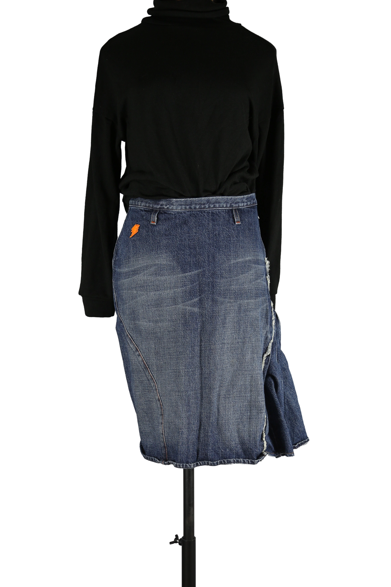

1 / 14Aus dem kuratierten Archiv von Disorder119. Avantgardistischer Denimrock aus der W< Linie von Walter Van Beirendonck. Der Rock zeichnet sich durch eine bewusst unkonventionelle Schnittführung mit asymmetrischen Teilungsnähten und einem skulptural ausgearbeiteten Saumbereich aus. Die robuste Denimqualität wird durch sichtbare Nahtführungen, offene Kanten und markentypische grafische Details ergänzt. Auffällig sind die orangefarbenen Zierstickereien, das Blitzmotiv sowie der charakteristische Innenprint, der den rebellischen Geist der W< Ära widerspiegelt. Ein prägnantes Archivstück, das klassische Denimtradition mit konzeptueller Formensprache verbindet. Details: Marke: Walter Van Beirendonck – W< Farbe: Blau Größe: M Passform: Tailliert mit ausgestelltem Saum Verschluss: Reißverschluss und Knopf Material: Denim Herstellungsland: Italien Fotografie & Passform: Das Kleidungsstück wurde auf unserer Standard-Schneiderpuppe fotografiert, die wir zur konsistenten Darstellung aller Kleidungsstücke verwenden. Maße der Schneiderpuppe: Brustumfang 89 cm Taillenumfang 66 cm Hüftumfang 89 cm Schulterbreite 38 cm Zustand: Gebrauchter Zustand mit alters- und designbedingten Tragespuren. Keine strukturellen Beschädigungen. Rechtliche Hinweise: Verkauf als gebrauchtes Kleidungsstück. Die Beschreibung erfolgt nach bestem Wissen und Gewissen. Farbnuancen und Oberflächenwirkungen können aufgrund von Lichtverhältnissen bei der Fotografie sowie unterschiedlicher Bildschirmdarstellungen leicht vom Original abweichen. Disorder119 steht für sorgfältig kuratierte Designerstücke mit Fokus auf Authentizität, Qualität und zeitlose Relevanz.
Dieses Stück ist bereits verkauft und bleibt als Teil des Disorder119-Archivs sichtbar.
Disorder119 · Kuratiertes Archiv für Designer-, Vintage- und Contemporary-Mode. Jedes Stück wird einzeln ausgewählt, fotografiert und beschrieben.